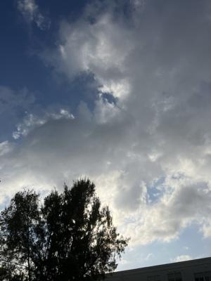
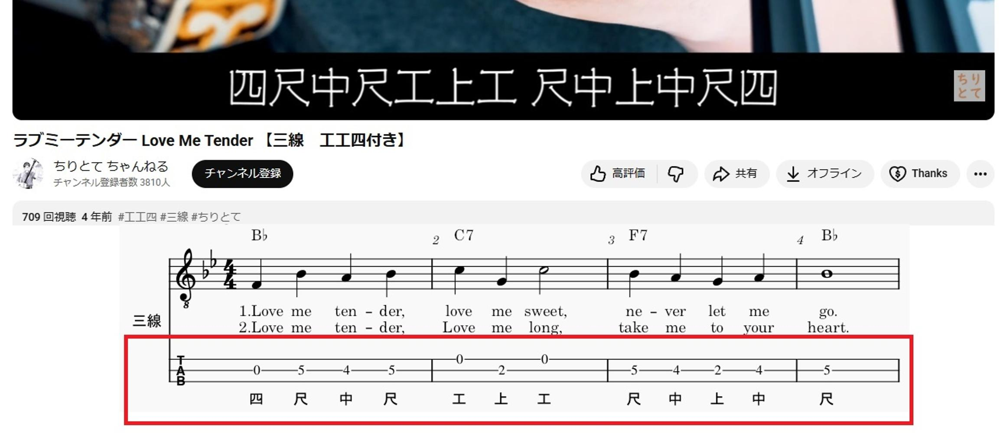

うるがいの話 ある日
最新: 調号について【うるがいの話 ある日】とは 一日だけのプログです
『うるがいの話』の最新一日だけのプログで、通信料が少なく経済的だ。カニの画像をクリックすると全ての日付が載る『うるがいの話』サイトを表示します
|
|
【うるがいの話】 うるがい(ｳﾙｶﾞｲ urugai)とは、『もずくがに』の名前でとても大きくなります。 |
|---|---|
|
|
【カミマヤーの話】 猫のことを方言でマヤーといいます。カミマヤー（kamimayaa）とは、神の猫のことです。 |
|
【たながぁの音楽】 たながぁ（ﾀﾅｶﾞｰ tanagaa）とは手長えびのことで、何種類かあり大きいのは車 エビぐらいになります。 |

|
【ぶながぁの話】 ぶながぁ(ﾌﾞﾅｶﾞｰ bunagaa)とは、赤い髪の毛、赤い身体、そして身長は１ｍ２０ｃｍ ぐらい、川の蟹を食べているの目撃された。場所は沖縄県国頭郡大宜味村のと ある村僕の隣近所に住んでいる爺さんから、聞いた話です。 |
|
|
【ギーマの話】 ギーマ(giima)とは、山原の里山に咲くスズランに似た、 花を付けます。実は食べられます、 気が付くと口の周りが紫になっています。 |
2025年11月15日 (土）調号について
20:05

映画『エルヴィス』を観る。懐かしい曲『ラヴ・ミー・テンダー
』の曲が流れていた。フムフム、作るかと楽譜データのネタを探
す。さすが名曲なので、いろいろ探せた。
楽譜は、＃が一つのト長調（Ｇメジャー）で、メロディーがレ
から始まる。楽譜データのミディでは、
♭が一つのへ長調（Ｆメジャー）で、メロディーがドから始まる
＃が２個のニ長調（Ｄメジャー）で、メロディーはラから
♭が５個の変ニ長調（Ｄ♭メジャー）で、メロディーがラから
で、＃が２個で作成することにした。そして、いよいよ工工四へ
展開した。なんと、この弦では弾き難い。

それではと、三線でよく使われる♭が一つのへ長調にした。
ユーチューブ動画で既に、三線バージョンがあるか調べた。ある
ね。キーは、一緒でなかった。♭が２個の変ロニ長調、ファから
始まる。動画の下にある楽譜は、暇潰しに作ってみて勘所を確認
した。

せっかくなので、作成したユーチューブ動画をば
エルヴィス ラヴ・ミー・テンダー（Love Me Tender） 三線
https://youtu.be/M2xaxoZSWqo